ℹ️ Antes de empezar
La Calculadora CaVeSal® funciona por pestañas/secciones colapsables: tocá el encabezado de cada módulo para abrirlo, cargá los datos disponibles, y el resultado se actualiza automáticamente a medida que escribís — no hace falta ningún botón de "Calcular".
Todos los cálculos se hacen en tu propio dispositivo, sin conexión a internet ni envío de datos a servidores externos.
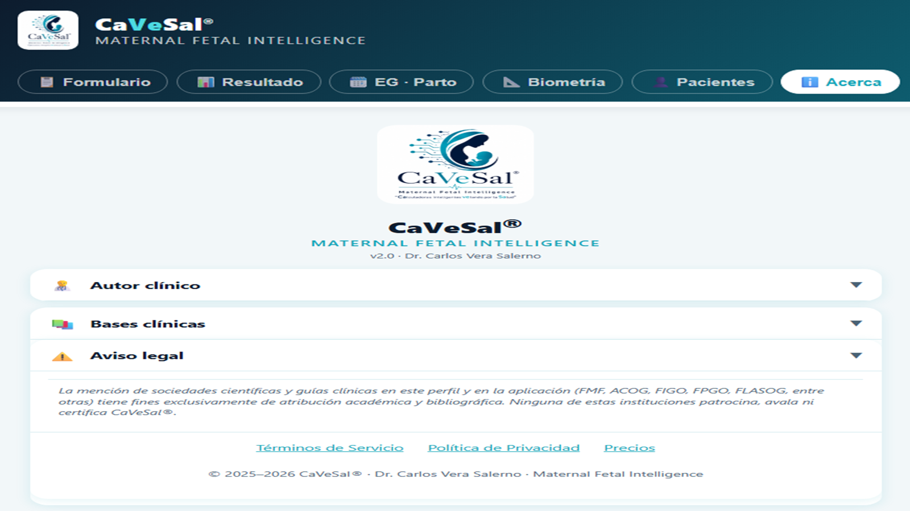
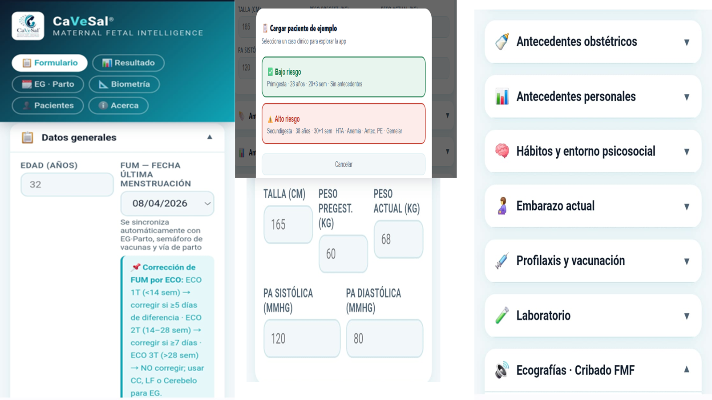
🎨 Cómo leer los resultados
Todos los módulos de la Calculadora usan el mismo lenguaje visual, para que interpretar un resultado sea siempre igual de rápido, sin importar qué estés calculando:
Código de color por nivel de riesgo/alerta: 🟢 verde = normal/bajo riesgo · 🟡 amarillo/naranja = moderado, requiere seguimiento más cercano · 🔴 rojo = alto riesgo, requiere acción o derivación.
Cada resultado con hallazgo relevante incluye, en este orden: el valor o dato que disparó la alerta, la interpretación clínica en lenguaje llano, la conducta sugerida (qué hacer, con qué frecuencia, a quién derivar), y la fuente de la que sale la recomendación (FMF, ACOG, NICE, OMS, CLAP, Medicina Fetal Barcelona, etc.).
Cuando el "⚡ Calcular riesgo prenatal completo" arma el informe global, agrupa automáticamente estos mismos hallazgos en un "Plan de acción", ordenado por urgencia: primero lo que requiere atención hoy/urgente, después el seguimiento de rutina, con la próxima fecha de consulta sugerida según el nivel de riesgo global.
⚡ Cálculo de riesgo prenatal integral
Esta es la función principal del formulario general (no una calculadora aislada): a medida que cargás los datos de la paciente en las distintas pestañas del formulario, la app va acumulando la información, y al tocar el botón "⚡ Calcular riesgo prenatal completo" genera un informe consolidado con todos los hallazgos relevantes juntos.
Cargá en el formulario principal: edad materna, FUM, talla, peso pregestacional y actual, presión arterial, período intergenésico, número de cesáreas previas, y marcá los antecedentes obstétricos y personales de riesgo (checkboxes: preeclampsia previa, diabetes gestacional previa, parto pretérmino previo, RCIU previo, muerte fetal previa, malformación previa, HPP previa, isoinmunización previa, incompetencia cervical previa, etc.).
Si tenés datos de ecografía de 1er trimestre (Doppler de Arteria Oftálmica, PAPP-A, PlGF, β-hCG, o NT si el cribado es solo por eco), cargalos también — se integran automáticamente al informe.
Tocá "⚡ Calcular riesgo prenatal completo". La app recorre todos los datos cargados y arma una lista de hallazgos por dominio clínico (Edad materna, Estado nutricional, Antecedente obstétrico, Presión arterial, Ecografía 1T, Cribado cromosómico, etc.), cada uno con:
🔹 El dato o valor que disparó la alerta (ej. "IMC pregest. 32.1 — obesidad").
🔹 El nivel de riesgo: bajo, moderado o alto.
🔹 La conducta sugerida (ej. dosis de AAS, frecuencia de controles, estudios adicionales a solicitar).
🔹 La fuente de la recomendación (FMF, ACOG, NICE, OMS, etc.).
Si no hay hallazgos de riesgo en algún dominio, simplemente no aparece en el informe — solo se listan los dominios donde hay algo para señalar.
El informe también arma automáticamente una Suplementación recomendada según el perfil de la paciente: ácido fólico/metilfolato (dosis según población general o riesgo aumentado), hierro (dosis según grado de anemia), calcio (si hay riesgo de PE, con la reducción de riesgo asociada), yodo, y omega-3/DHA — cada uno con su dosis exacta y referencia.
Incluye además dos calendarios de componente básico, marcando qué corresponde a la EG actual (etiquetado "AHORA" / "PERÍODO ACTUAL"), qué ya pasó, y qué falta:
🔹 Calendario de laboratorios: panel de 1T (primera consulta: hemograma, crasis, grupo/Rh, serologías, TSH, glucemia, perfil lipídico, urocultivo, etc.), panel de 2T (24–28 sem: hemograma, SOG 75g, urocultivo, VDRL, VIH, toxoplasmosis si corresponde), y panel de 3T (35–37 sem: hemograma, crasis, perfil renal/hepático, VDRL, VIH, SGB).
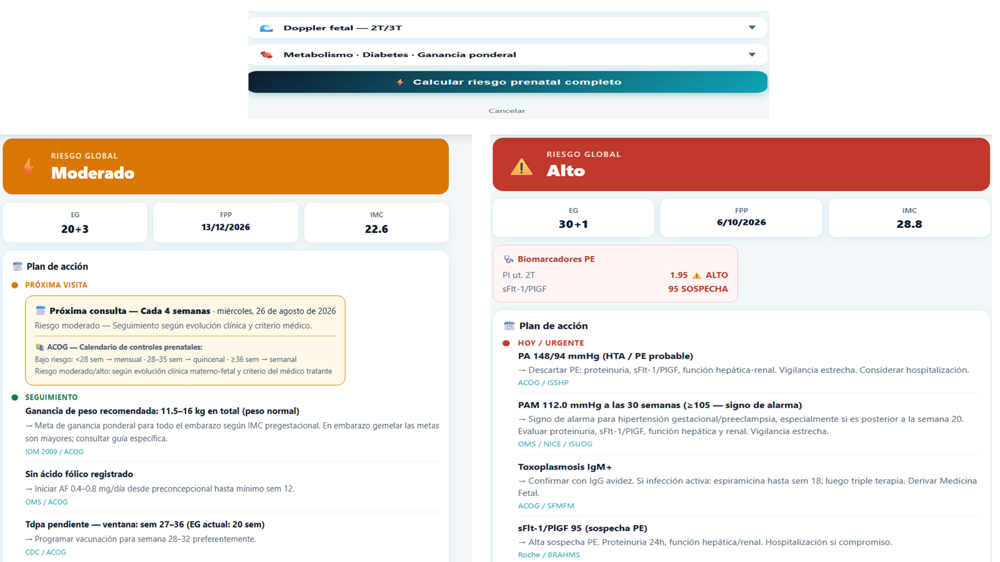
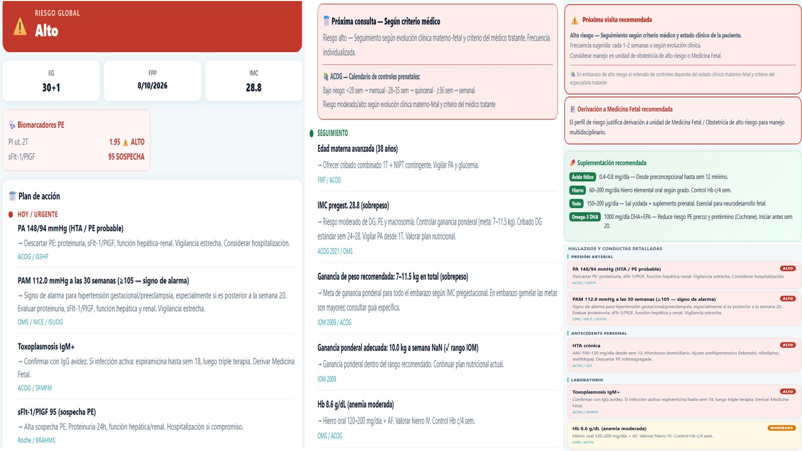
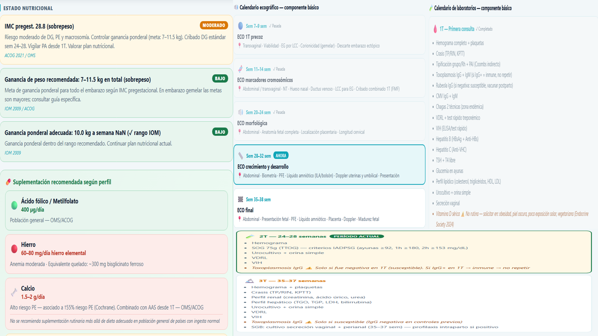
🗓️ Edad gestacional y calendario (FUM / ECO precoz)
Este módulo es la base de todos los demás — la edad gestacional (EG) que calculás acá se sincroniza automáticamente con el resto de la calculadora.
Elegí el modo: "Por FUM" (fecha de última menstruación) o "Por ECO precoz" si tenés una ecografía temprana con la EG ya determinada.
Modo FUM: cargá la fecha de última menstruación. La app calcula la EG a la fecha de hoy (o a cualquier otra fecha que elijas en "Calcular para fecha").
Modo ECO precoz: cargá la fecha de la ecografía y la EG que arrojó ese estudio (formato semanas+días, ej. "8+3"). La app compara automáticamente esa EG contra la FUM cargada y te indica si corresponde corregir la FUM, según estos criterios:
🟢 1er trimestre (<14 sem): se corrige si la diferencia es ≥5 días.
🟡 2do trimestre (14–28 sem): se corrige si la diferencia es ≥7 días.
🔴 3er trimestre (>28 sem): no se corrige la FUM — para EG dudosa en 3T conviene usar CC, LF o cerebelo como parámetro aislado (ver sección de Biometría avanzada).
Con la EG calculada, la app muestra un calendario semana a semana (22 a 42 semanas) con la fecha calendario correspondiente a cada semana de embarazo, marcando el rango de término (37–40 sem) y el postérmino.
También incluye un cálculo inverso: indicá una semana puntual (ej. "36") y la app te dice qué fecha calendario corresponde a esa semana, para esta paciente.
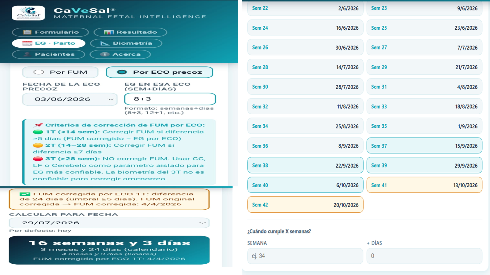
🧬 Riesgo cromosómico y Translucencia Nucal (TN)
Ref: Snijders/FMF 1998 · Sharifzadeh 2019
Cargá la edad materna y la longitud céfalo-caudal (CRL) del feto, en milímetros.
Ingresá el valor de translucencia nucal (NT) medido, también en mm.
Opcionalmente, marcá los hallazgos de hueso nasal, ductus venoso y regurgitación tricuspídea si los evaluaste.
La app muestra la NT esperada para ese CRL (mediana y percentil 95), el MoM calculado, y una clasificación categórica de riesgo (bajo / moderado / alto) — no un número 1:N, por decisión clínica deliberada.
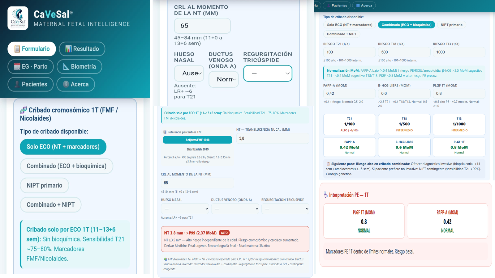
🩸 Doppler de arterias uterinas y Arteria Oftálmica (cribado PE)
Ref: Medicina Fetal Barcelona · Gyselaers 2020 · Verlohren 2012
Este módulo es distinto del Doppler fetal (AU, ACM) — acá se evalúa el Doppler materno, para cribado de preeclampsia y compromiso vascular sistémico.
Arterias uterinas (IP): cargá el IP derecho e izquierdo, tanto en 1er como en 2do trimestre — la app calcula automáticamente el IP medio de ambas.
La app clasifica el IP medio uterino: en 1T, alerta desde IP ≥1.90 (moderado) y ≥2.35 (alto); en 2T, desde IP ≥1.44 (moderado) y ≥1.80 (alto).
Arteria Oftálmica (AO): cargá el PSV1 (primer pico sistólico) y PSV2 (segundo pico) — la app calcula el ratio PSV2/PSV1 automáticamente.
El ratio AO se interpreta igual en 1T y 2T/3T: ≥0.70 es zona limítrofe, ≥0.78 es alto riesgo de preeclampsia/compromiso vascular — en ese caso, la app recomienda integrar el dato con PI uterinas y PlGF.
🔹 Cribado en 1er trimestre: ratio AO junto con PI uterinas y PlGF, para estimar riesgo de desarrollar preeclampsia más adelante.
🔹 Pronóstico en preeclampsia/HIE ya instalada (2do-3er trimestre): el mismo ratio AO se usa para evaluar severidad del compromiso vascular sistémico en una paciente que ya cursa preeclampsia — un ratio ≥0.78 en este contexto se asocia a mayor riesgo de RCIU severo, preeclampsia precoz y peor pronóstico materno-fetal, y amerita derivación urgente a Medicina Fetal.
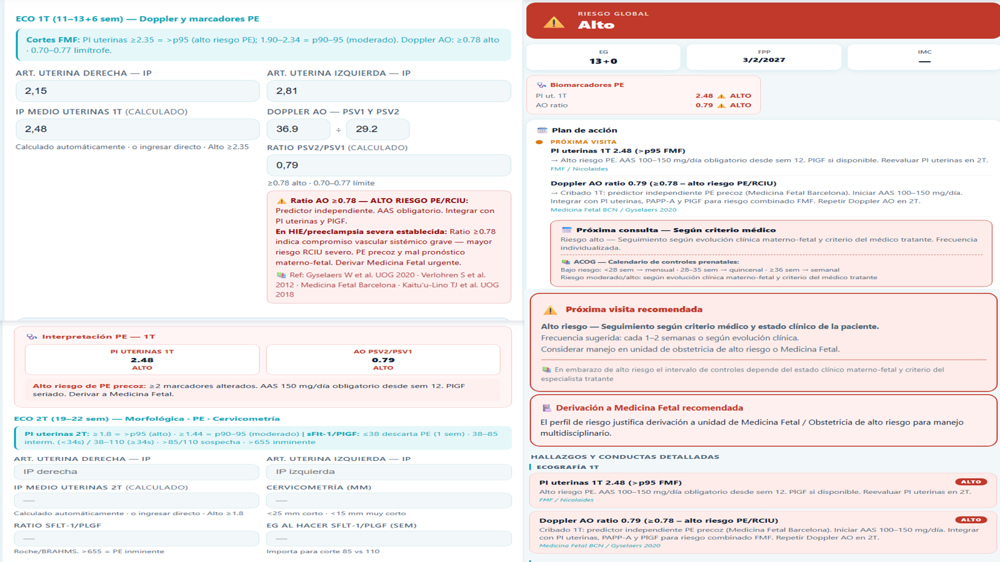
🩺 Cribado de preeclampsia (PAM)
Ref: WHO / NICE / ISUOG / FMF / ACOG
Cargá la presión arterial sistólica y diastólica, y la edad gestacional del control.
Marcá los antecedentes obstétricos de riesgo si corresponde (preeclampsia previa, etc.) — esto ajusta la interpretación.
La app calcula la Presión Arterial Media (PAM) y la clasifica según el trimestre, indicando si corresponde vigilancia habitual, AAS profiláctico, o estudio ampliado.
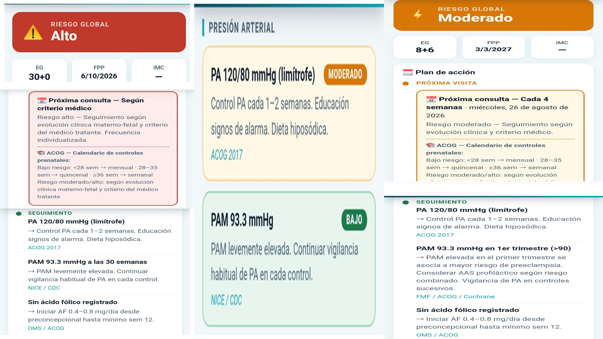
🍬 Diabetes gestacional
Ref: IADPSG · ALAD · ADA · OMS
Elegí el protocolo a usar: IADPSG (1 paso) o ALAD/ADA (2 pasos) — desde el selector correspondiente.
Cargá los valores de la curva de glucosa (basal, 1h, 2h según el protocolo elegido).
La app indica si los valores confirman diagnóstico de diabetes gestacional según los puntos de corte del protocolo seleccionado.
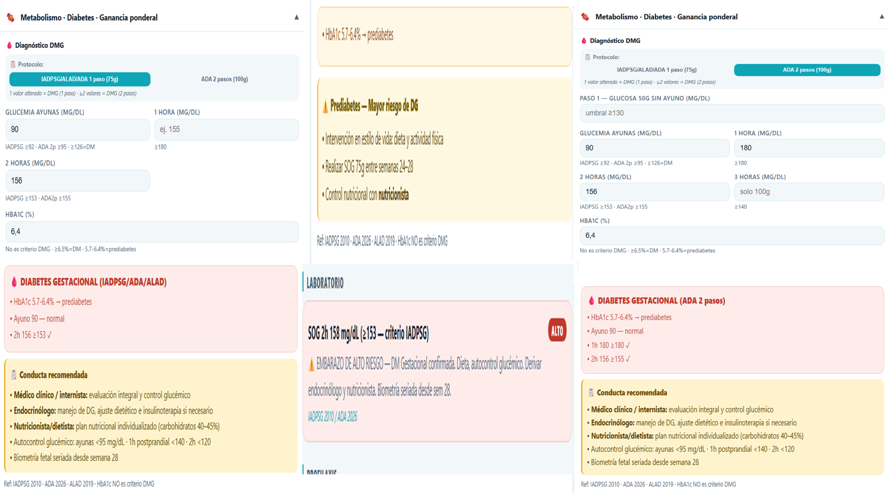
⚖️ Ganancia de peso gestacional
Ref: IOM/NAS 2009 · ACOG
Cargá el peso pregestacional, la talla, y el peso actual con su edad gestacional.
La app calcula el IMC pregestacional y ubica a la paciente en su categoría (bajo peso, normal, sobrepeso, obesidad).
Muestra la meta de ganancia total para el embarazo y la tasa semanal recomendada según esa categoría, comparándola con la ganancia real hasta el momento.
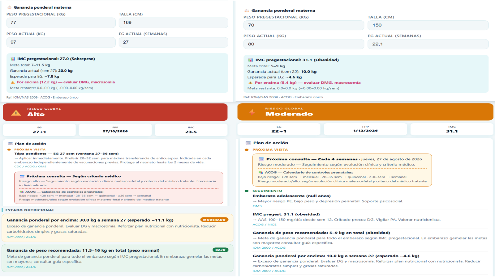
👶 Peso Fetal Estimado (PFE) y crecimiento
Ref: Hadlock 1984 · INTERGROWTH-21 · Figueras 2008 · Protocolo MFB 2024
Elegí el modo de cálculo: peso y percentil directo, peso + edad gestacional, o biometría Hadlock (circunferencia abdominal + longitud femoral).
Cargá los valores según el modo elegido.
La app calcula el percentil de peso fetal y lo clasifica: PEG, AEG, GEG, o RCIU según el percentil y — si ya cargaste el Doppler — combinando ambos criterios (ver sección Doppler).
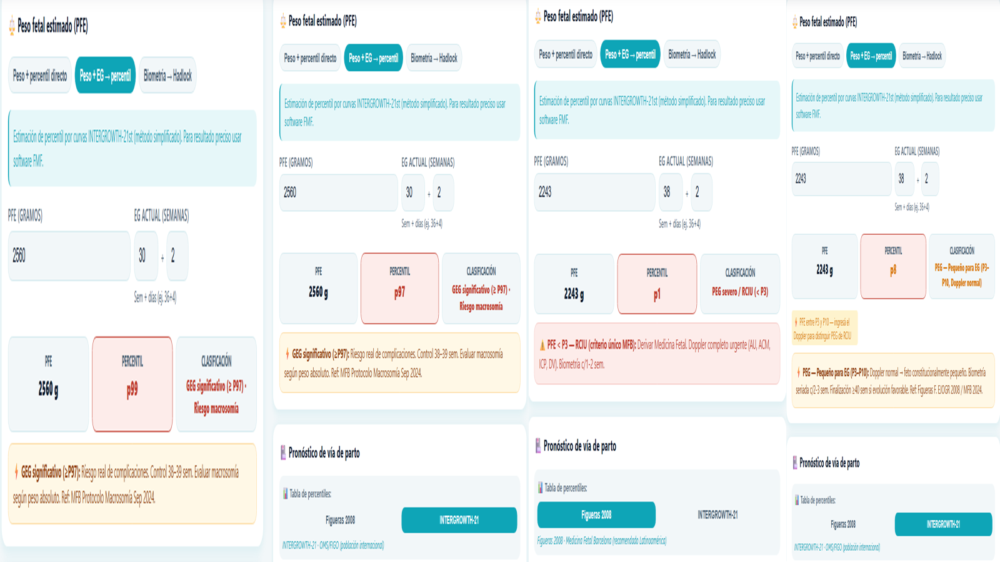
🧠 Biometría fetal avanzada
Este módulo tiene 5 sub-pestañas, cada una para un uso clínico distinto: CRL·1T, Biometrías 2T/3T, Húmero, Cerebelo, y Asimetría LF/CA.
📐 CRL · 1T (EG por longitud cráneo-caudal)
Ref: Robinson & Fleming 1975 (estándar FMF/Nicolaides)
Cargá el CRL en mm (rango válido: 10–84 mm, aprox. 6+3 a 13+6 semanas).
La app calcula la EG con la fórmula EG(días) = 8.052×√(CRL×1.037)+23.73, con margen de error ±5 días — es la medida más precisa para datar el embarazo, y muestra la FUM corregida y la FPP correspondiente.
📏 Biometrías · 2T/3T
Ref: Hadlock 1984
Cargá los parámetros disponibles: DBP, CC, CA, LF (en mm) — cada uno calcula su propia EG estimada por separado.
Criterio de uso: en 2T usar DBP o LF (margen ±1 semana); en 3T preferir CC o LF (menor variabilidad que DBP); en EG dudosa o discordante en 3T, usar CC o LF para la estimación, sin corrección formal de FUM.
Si hay una discordancia significativa entre parámetros (≥7 días), la app alerta y sugiere evaluar asimetría fetal — considerando RCIU asimétrico si la CA es el parámetro rezagado — y recomienda pasar a la sub-pestaña "Asimetría LF/CA" para el análisis.
🦴 Húmero
Cargá la longitud del húmero (mm) como parámetro adicional de EG, útil como alternativa o complemento al fémur, especialmente si hay sospecha de displasia esquelética.
🧠 Cerebelo (DTC)
Ref: Goldstein et al. 1987
Cargá el diámetro transverso del cerebelo (DTC) en mm. Entre las semanas 14–28, el DTC en mm equivale aproximadamente a la EG en semanas (después de sem. 28 la correlación deja de ser lineal, y la app usa las tablas de Goldstein).
Ventaja clave: el DTC es independiente de las restricciones de crecimiento — no se afecta en RCIU, por lo que es el parámetro más confiable para estimar EG en fetos con RCIU o asimetría severa.
Un DTC conservado en un feto con sospecha de RCIU confirma que la EG asignada es correcta; un DTC pequeño para la EG es marcador de patología del SNC (hipoplasia cerebelosa, síndrome de Dandy-Walker) y amerita derivación.
⚖️ Asimetría LF/CA
Ref: Campbell & Thoms 1977
Concepto: en RCIU tardío y asimétrico, el feto redistribuye flujo (brain sparing) — el crecimiento abdominal se restringe antes que el cefálico. El ratio LF/CA detecta esta asimetría precozmente.
Cargá LF, CA (en mm), y opcionalmente CC (para chequeo de microcefalia: CC <p3 para la EG) y la EG actual.
Interpretación del ratio LF/CA: normal 0.20–0.24 · <0.16 = LF desproporcionadamente corto respecto a CA → sospecha de acortamiento de extremidades (enanismo, displasia esquelética) · >0.235 = CA desproporcionadamente pequeña respecto a LF → asimetría / RCIU asimétrico tardío (brain sparing), amerita Doppler (umbilical y ACM) y biometría seriada c/2 semanas.
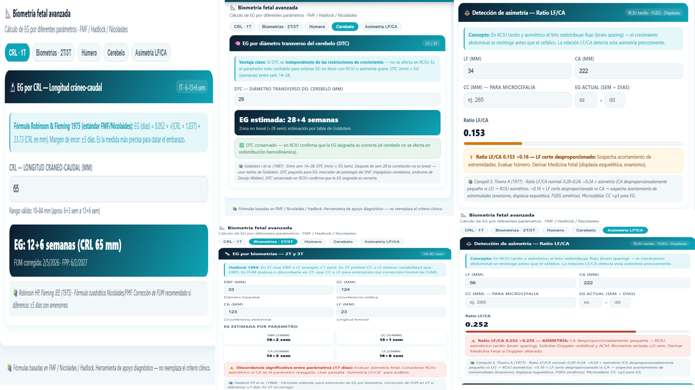
📏 Altura uterina
Ref: Gomes AG 2001 · CLAP-OPS/OMS · fórmula de McDonald (sínfisis-fondo)
Cargá la altura uterina en cm (medida sínfisis-fondo, técnica de McDonald) y la edad gestacional en semanas+días.
La app muestra el percentil (con los valores de referencia P10/P50/P90 para esa EG) y clasifica el resultado: AU normal para EG, AU alta para EG (>P90), o AU baja para EG (<P10) — válido en el rango 20–36 semanas, donde AU(cm)≈EG±2.
Según la clasificación, sugiere qué descartar: AU alta → macrosomía fetal, polihidramnios, gemelar no diagnosticado, miomas uterinos, diabetes gestacional (solicitar ecografía). AU baja → RCIU, oligoamnios, discordancia de EG (ecografía con PFE urgente, valorar Doppler AU/ACM).
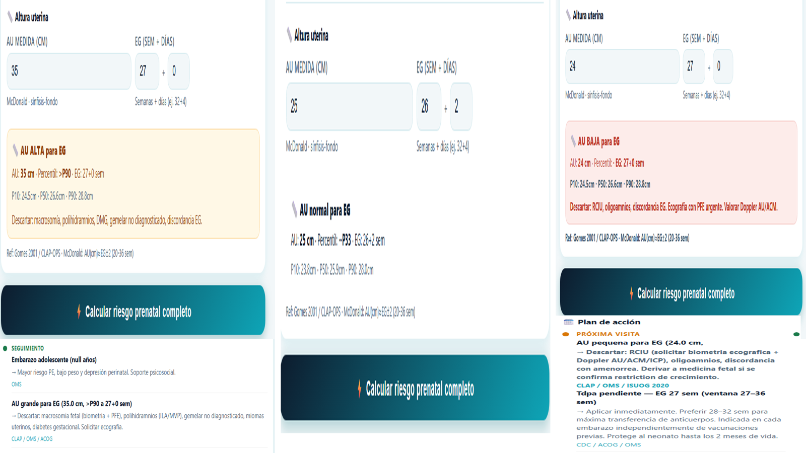
🩸 Doppler fetal — 2T/3T (AU, ACM, ICP, ductus venoso, avanzado)
Ref: Baschat AA & Gembruch U. UOG 2003 · Arduini & Rizzo 1990 · Mari NEJM 2000 · ISUOG 2020 · TRUFFLE Study
Doppler básico
Cargá la EG al estudio (semanas+días), y los valores disponibles: Arteria Umbilical (IP, IR), Arteria Cerebral Media (IP, y PSV en cm/s para cribado de anemia), y Ductus Venoso (PIV).
La app calcula automáticamente el ICP = ACM/AU, con su umbral P5 dinámico según la EG (ej. a las 33 semanas, P5≈1.07) y lo marca como alterado si cae por debajo.
El resultado muestra cada parámetro con su percentil individual (AU PI, ACM PI, ICP, DV PIV), señalando cuáles están alterados y qué significan (ej. AU aumentada = resistencia placentaria; ICP alterado = redistribución hemodinámica).
Doppler hemodinámico avanzado
Regurgitación tricuspídea (RT) 2T/3T: marcador de disfunción cardíaca derecha. Indicar si DV alterado o sospecha de cardiomiopatía fetal (no confundir con la RT del 1T, que es cribado cromosómico).
Istmo Aórtico (AoI): cargá IP y flujo diastólico (normal/reducido/ausente/reverso). Refleja redistribución cerebral y postcarga ventricular izquierda — flujo retrógrado indica compromiso neurológico grave. Indicar si ACM o ICP alterados en RCIU pretérmino.
Vena Umbilical Pulsátil (VUP): la pulsatilidad venosa umbilical es signo tardío de descompensación fetal — indica fallo cardíaco con congestión venosa, asociada a mortalidad perinatal elevada.
Si el Doppler avanzado sale alterado y la EG es <34 semanas, la app recuerda la maduración pulmonar (betametasona 12mg IM c/24h x2 dosis, ref. ACOG PB 127/RCOG) y que la finalización se define según evolución clínica y biofísica, coordinando con neonatología.
Arteria Oftálmica — Pronóstico HIE/PE (2T/3T)
En paciente con HIE/preeclampsia ya establecida, cargá PSV1 y PSV2 de arteria oftálmica — el ratio PSV2/PSV1 evalúa el grado de compromiso vascular sistémico: ≥0.78 compromiso grave · 0.70–0.77 limítrofe · <0.70 favorable.
Un ratio ≥0.78 indica mayor riesgo de RCIU severo y PE de inicio precoz, con mal pronóstico materno-fetal — la app recomienda derivar a Medicina Fetal urgente y evaluar sFlt-1/PlGF, función renal/hepática y bienestar fetal.
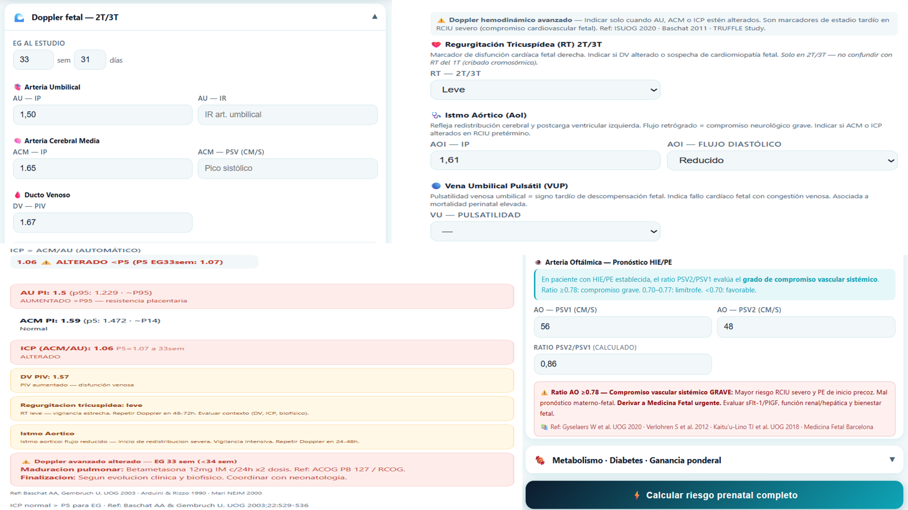
🩸 Doppler ACM — Anemia Fetal
Ref: Mari G. et al. NEJM 2000 · Algoritmo propio CaVeSal® · Umbral MoM ≥1.50
Módulo específico para cribado de anemia fetal por isoinmunización Rh/Kell mediante el pico sistólico de velocidad de la ACM (PSV-ACM).
Cargá la EG (semanas+días) y el PSV de ACM en cm/s.
La app calcula el MoM (comparando contra la mediana esperada para esa EG) y clasifica: Normal (MoM <1.29, sin evidencia de anemia, control según protocolo) · Anemia leve posible (MoM 1.29–1.49, vigilancia, repetir en 1–2 semanas) · Anemia moderada-severa (MoM ≥1.50, indicación de cordocentesis y transfusión intrauterina urgente).
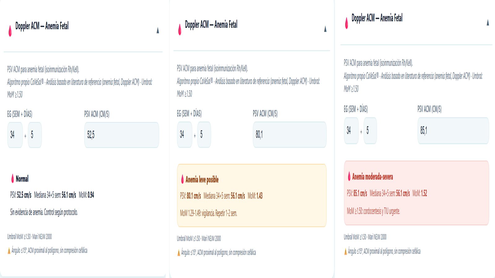
🏥 Pronóstico de vía de parto
Ref: Robson · Grobman (ACOG/NICHD) · Bishop
Cargá paridad y antecedentes (partos vaginales previos, cesáreas previas, abortos espontáneos), talla materna (referencia: <150cm riesgo de desproporción céfalo-pélvica, <145cm pelvis límite), y estado fetal 3T (presentación, encajamiento, EG actual).
La app clasifica automáticamente a la paciente en su Grupo de Robson correspondiente (ej. Grupo 5: cesárea previa + cefálica; Grupo 7: multípara pélvica), con la interpretación de ese grupo.
Si hay cesárea previa, se habilita el Score de Grobman (validado ACOG/NICHD, predice probabilidad de éxito de parto vaginal después de cesárea). Cargá tipo de cicatriz uterina, indicación de la cesárea anterior (recurrente o no), y marcá si hubo parto vaginal previo, trabajo de parto espontáneo previo, pérdida gestacional recurrente, embarazo de alto valor, o cirugía uterina previa.
Según esos datos, la app indica si es "Candidata a PVDC" (parto vaginal después de cesárea) — listando los criterios favorables encontrados — o si corresponde "Cesárea programada indicada", con la justificación específica (ej. PFE ≥4500g, embarazo de alto valor).
Si cargás el examen cervical (dilatación, borramiento, estación, consistencia, posición), la app calcula el Score de Bishop y lo clasifica (favorable/desfavorable), sugiriendo maduración cervical si corresponde.
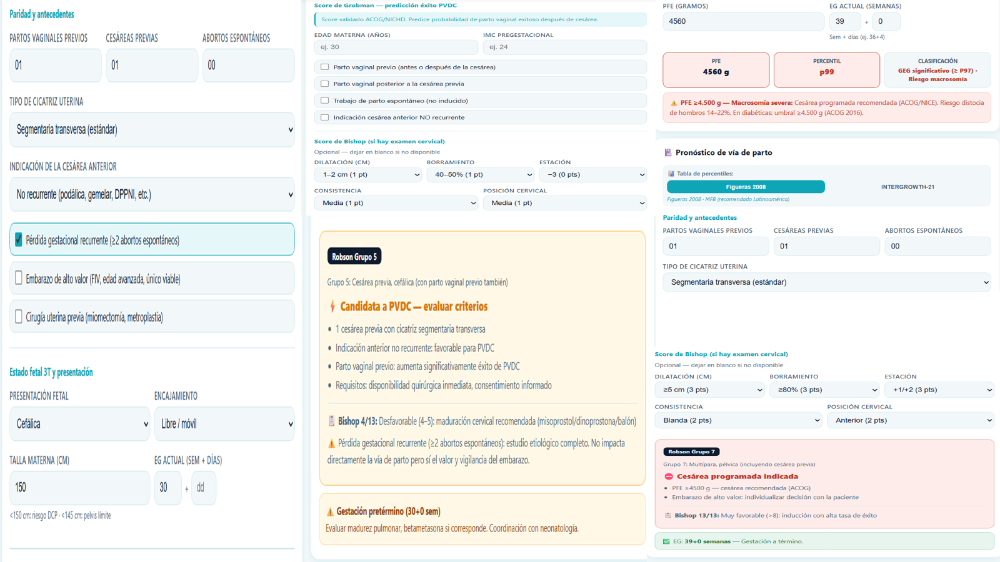
🧪 Laboratorio
Ref: OMS · ACOG · ISSHP · Endocrine Society 2024 · CDC · ETMI Plus 2024/OPS
Módulo extenso, organizado en sub-áreas. Cargá solo los valores que tengas disponibles — cada uno se interpreta de forma independiente.
🩸 Hemograma y coagulación
Hemoglobina: anemia si <11 g/dL en 1T o <10.5 g/dL en 2T-3T (OMS). Plaquetas: normal 150–400 (×10³/mL), <150 = trombocitopenia. TP/RIN (normal en embarazo 0.8–1.2) y KPTT (normal 25–40 seg). También podés marcar proteinuria positiva y urocultivo positivo como hallazgos.
🫘 Perfil renal
Creatinina (normal en embarazo <0.8 mg/dL), ácido úrico (normal <5.5 mg/dL — marcador precoz de PE si elevado junto con HTA), urea (normal 10–40 mg/dL).
🫀 Perfil hepático
TGO/AST y TGP/ALT (normal <40 UI/L, sospecha si >70), LDH (>600 UI/L = criterio de HELLP), bilirrubina total (normal <1.2, sospecha colestasis), fosfatasa alcalina (normal hasta 3× LSN por origen placentario). La app combina automáticamente: TGO/LDH elevadas + trombocitopenia = criterio de HELLP, con conducta de hospitalización inmediata, maduración pulmonar si <34 sem, y finalización individualizada.
🍔 Perfil lipídico
Colesterol total (aumenta fisiológicamente en embarazo), triglicéridos (>400 mg/dL = riesgo de pancreatitis), HDL, LDL.
🔬 Serología TORCH
Toxoplasmosis (IgG/IgM/avidez IgG — clave: IgG+ en 1T = inmune, no repetir; IgG− = susceptible, repetir cada trimestre; IgM+ = solicitar test de avidez), Rubeola (IgG/IgM), CMV (IgG/IgM/avidez IgG).
🧬 Vitamina D, Ferritina y Saturación de transferrina
Vitamina D sérica: solicitar en obesidad, piel oscura, poca exposición solar, o vegetarianas (déficit <20, insuficiencia 20–29, óptimo ≥30 — Endocrine Society 2024). Ferritina: solicitar en sospecha de anemia ferropénica (déficit <15, bajo 15–30, normal >30). Saturación de transferrina: normal 16–45%, <16% = déficit funcional de hierro.
🦋 Tiroides
Cargá TSH junto con el trimestre del análisis — la app aplica el valor de referencia correspondiente (1T: 0.1–2.5 µUI/mL · 2T: 0.2–3.0 µUI/mL · 3T: 0.3–3.5 µUI/mL), más T4 libre (normal 0.8–1.8 ng/dL) y anti-TPO (>35 UI/mL = positivo).
🦠 Estreptococo grupo B (SGB) e ITS/Serología infecciosa
SGB: cribado obligatorio a las 35–37 semanas (cultivo vaginal+perianal). Si es positivo, la app indica profilaxis intraparto obligatoria (penicilina G, o clindamicina según antibiograma si hay alergia).
Hepatitis B (HBsAg/anti-HBs/HBeAg — HBsAg+ implica inmunoprofilaxis neonatal obligatoria en las primeras 12h, y si la carga viral es >200.000 UI/mL se agrega tenofovir desde semana 28), VIH (test rápido/ELISA + Western Blot de confirmación — un test rápido reactivo no es diagnóstico definitivo, amerita infectología urgente sin suspender TAR si ya la recibe; con WB confirmado se inicia TAR de inmediato con objetivo de carga viral indetectable al parto), Chagas (requiere 2 técnicas reactivas de principio distinto para confirmar — ELISA + HAI/IFI; con 1 sola técnica reactiva es indeterminado y amerita segunda técnica), y Hepatitis C (anti-VHC, confirmar con ARN-VHC).
Sífilis — la interpretación depende de la combinación de resultados:
🔹 Treponémico reactivo + VDRL aún no disponible: conducta urgente — solicitar VDRL cuantitativo, pero no diferir el tratamiento: iniciar penicilina G ya (esquema de latente tardía/duración desconocida) mientras se obtiene el resultado.
🔹 Treponémico reactivo + VDRL no reactivo: posible cicatriz serológica (tratamiento previo), ventana serológica muy temprana, o falso positivo del test rápido. Si no hay tratamiento documentado, tratar como latente tardía; VDRL de control en 4 semanas; notificar a infectología.
🔹 VDRL reactivo sin treponémico confirmatorio: el VDRL (no treponémico) puede dar falso positivo en embarazo, LES o infecciones virales — requiere confirmación con test treponémico antes de tratar.
Ref: CDC STI Treatment Guidelines 2021 · OPS Eliminación TV 2024 · ETMI Plus 2024 · ACOG
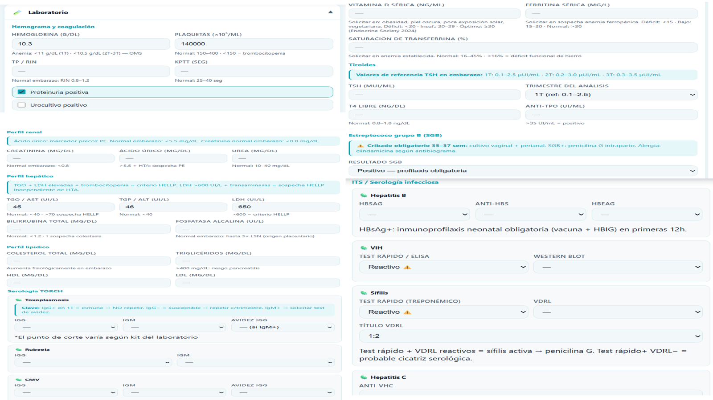
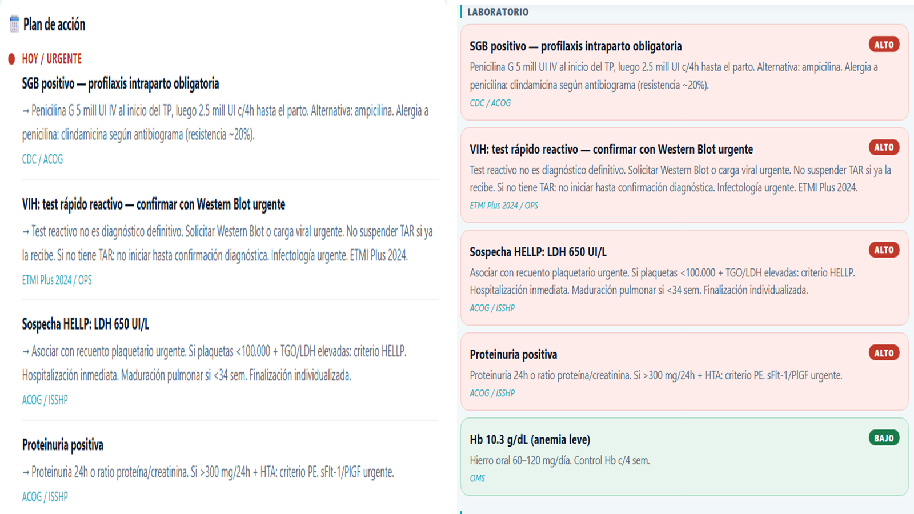
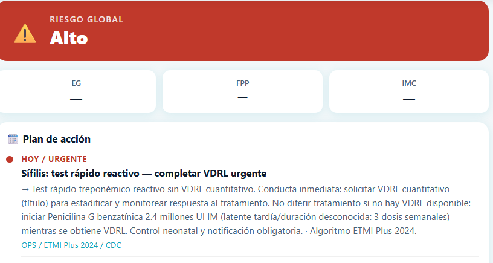
💉 Profilaxis y vacunación
Ref: CDC · OMS · ACOG · FIGO 2024 · Comité Nacional de Inmunización
Marcá las vacunas ya aplicadas (Tdpa, antigripal, VSR, COVID-19, Hepatitis B) con su fecha y edad gestacional, y si corresponde, si iniciaste ácido fólico (este último se agrupa junto con las vacunas bajo el dominio "Profilaxis" del informe).
La app indica el estado del esquema y qué queda pendiente según la EG actual, con la conducta específica de cada una:
🔹 Antigripal: vacuna inactivada, segura en cualquier trimestre. Prioridad en cardiopatía, diabetes, asma, obesidad, inmunosupresión, VIH. Nunca usar vacuna de virus vivos atenuados (LAIV) en el embarazo.
🔹 COVID-19: vacunas ARNm (Pfizer/Moderna) recomendadas por OMS, CDC, ACOG y FIGO. Seguras en cualquier trimestre — las embarazadas tienen mayor riesgo de COVID grave. Refuerzo si pasaron >6 meses desde la última dosis.
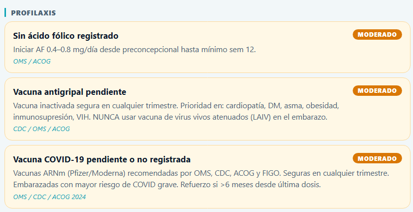
👤 Gestión de pacientes y backup
Desde la pestaña de Pacientes, tocá "Nueva paciente" para crear una ficha, o buscá una existente por documento.
Los datos que cargues en los módulos clínicos se guardan automáticamente dentro de la ficha de la paciente activa. Si marcaste reproducción asistida (TRA) en antecedentes (FIV/ICSI, IIU, PGR), la app lo señala como hallazgo de riesgo (mayor riesgo de placenta previa, preeclampsia y gemelar).
Cada ficha muestra automáticamente la fórmula obstétrica (G/P/C/A: gestas, partos, cesáreas, abortos) calculada a partir de los antecedentes cargados, junto con talla/peso y la clasificación de riesgo global.
Historial de visitas: dentro de la ficha de la paciente, tocá "+ Visita" para registrar cada control prenatal con: fecha, EG (autocalculada desde la FUM), peso actual, PA, laboratorio (Hb, glucemia, TSH), ecografía (PFE + percentil, cervicometría, presentación fetal), Doppler/sFlt-1-PlGF en texto libre, observaciones/plan, y fecha de próxima cita.
Cada visita queda en un listado cronológico editable — podés modificar o eliminar cualquier visita cargada, y desde ahí también podés volver a abrir esa paciente directo en la calculadora ("⚡ Abrir en calculadora") para recalcular su riesgo con los datos actualizados.
Desde "Mis pacientes", tocá "Backup local (.json)" para descargar un archivo con todas tus pacientes (tarjeta "Descargar .json"), y guardalo en tu propio Google Drive (tarjeta "Abrir Google Drive") — así podés sincronizar entre PC, celular o tablet manualmente, copiando el archivo de un dispositivo a otro.
Para "Importar backup", elegí el archivo .json y el modo: "Combinar" (agrega las pacientes del backup sin borrar las que ya tenés) o "Reemplazar todo" (borra los datos actuales y los reemplaza por los del backup).
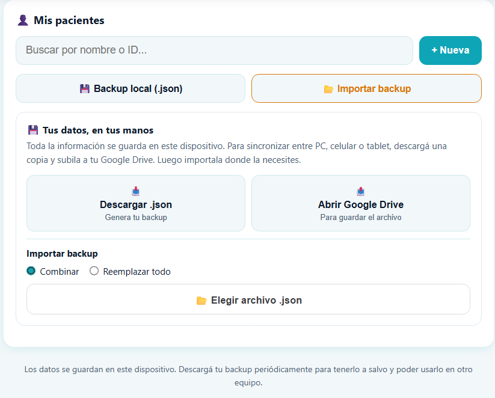
¿Dudas sobre algún módulo? Escribinos a drverasalerno@gmail.com · Última actualización: julio de 2026